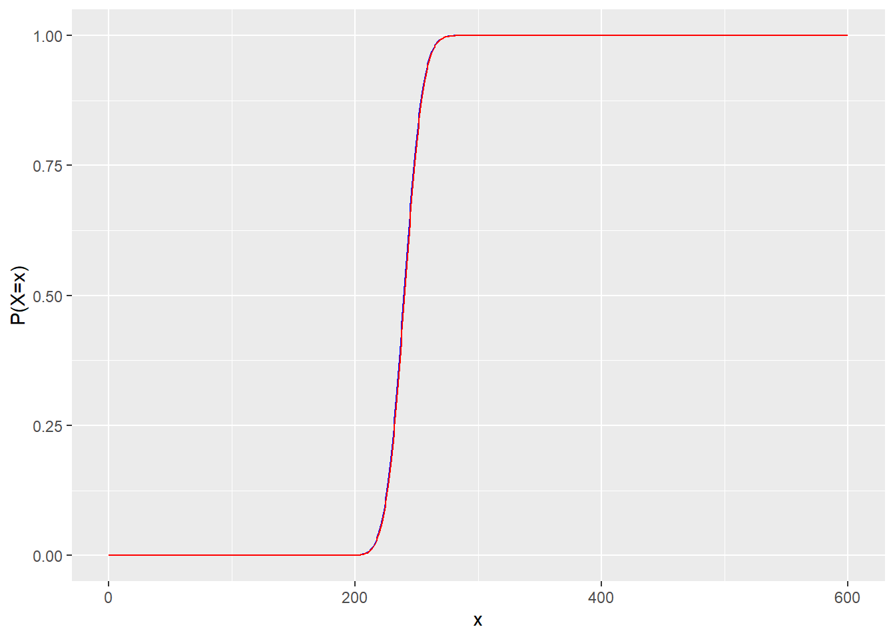
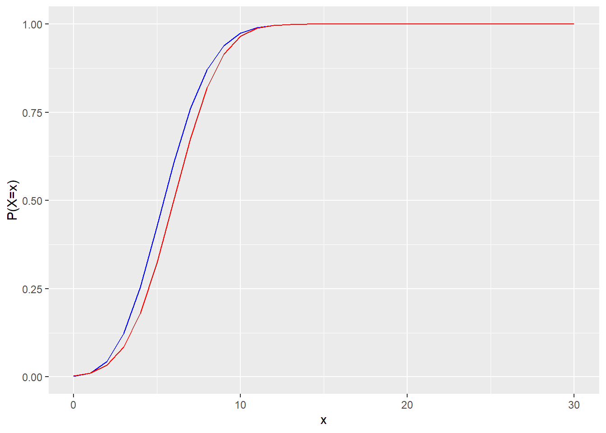
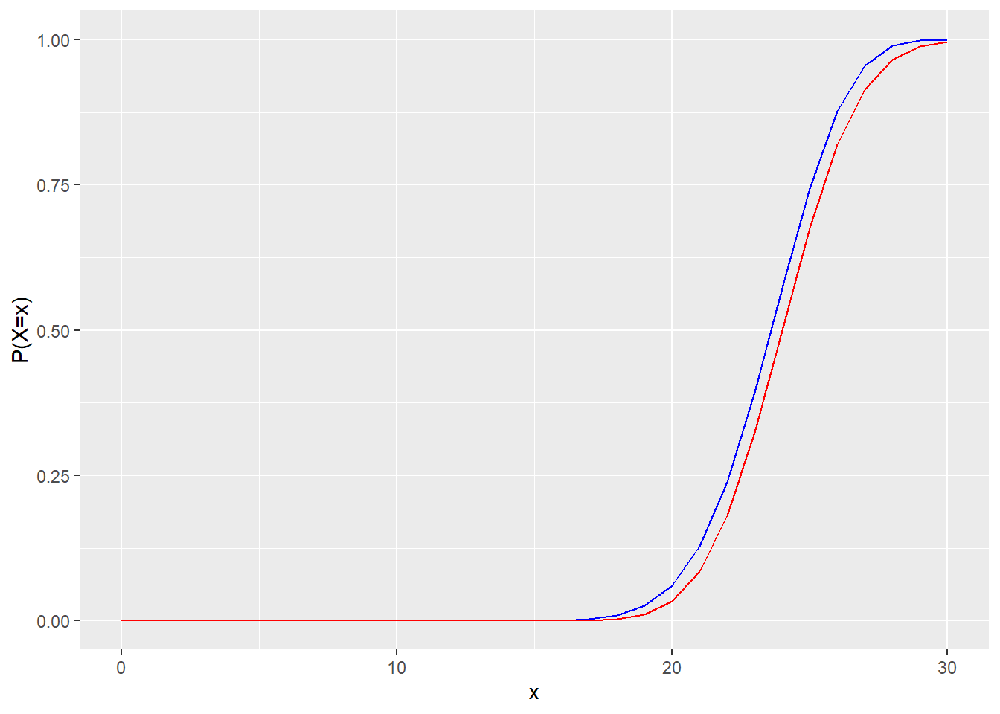

3 Part 2 - Probability

3.1 The Normal distribution
In the lecture, you were introduced to the Normal distribution and how to use the Z-table to look up cumulative proabilities or percentiles of the standard Normal distribution \(N(\mu=0,\sigma=1)\). These tables were particularly useful before computers were invented or whenever they are unavailable to you (for example, when you are stranded on an island. Or when you are sitting a closed-book exam).
In R, you can compute cumulative probabilities and percentiles directly from the Normal distribution, rather than having to approximate them using the tables. You can get an overview of the different functions available by calling the help function:
?NormalIf you want to compute the cumulative probability of a variable \(X\)~\(N(\mu=3,\sigma=2)\), e.g. \(P(X \leq 2)\), this can be done using the following line of code:
pnorm(q=2,mean=3,sd=2)## [1] 0.3085375To confirm this result, you can compute the Z-score (\(Z=\frac{X-\mu}{\sigma}\)) of \(X=2\) and look up the cumulative probability in the Z-table.
If you want to find the 95th percentile of the variable \(X\)~\(N(\mu=3,\sigma=2)\), you can do so by typing the following:
qnorm(p=0.95,mean=3,sd=2)## [1] 6.289707Again, you can confirm the result by looking up the Z-score belonging to the 95th percentile of the standard Normal distribution and back-transform to obtain the corresponding value of \(X\).
For \(X\)~\(N(\mu=82,\sigma=7)\), what is \(P(X<90)\)? (Round to 4 decimal places)
pnorm(q=?,mean=?,sd=?)
#P(X<90)=P(X≤90) for continuous variables
pnorm(q=90,mean=82,sd=7)## [1] 0.873451For \(X\)~\(N(\mu=82,\sigma=7)\), what is \(P(X>73)\)? (Round to 4 decimal places)
What is the complement of \(X>73\)?
Apply pnorm() to the complementary event, i.e. compute 1-pnorm(q=?,mean=?,sd=?)
#P(X>73)=1-P(X<73)=1-P(X≤73)
1-pnorm(q=73,mean=82,sd=7)## [1] 0.9007286#or alternatively:
pnorm(q=73,mean=82,sd=7,lower.tail=FALSE)## [1] 0.9007286For \(X\)~\(N(\mu=82,\sigma=7)\), what is \(P(73<X<90)\)? (Round to 4 decimal places)
pnorm(q=?,mean=?,sd=?) - pnorm(q=?,mean=?,sd=?)
#P(73<X<90)
pnorm(q=90,mean=82,sd=7)-pnorm(q=73,mean=82,sd=7)## [1] 0.7741796For \(X\)~\(N(\mu=12,\sigma=3)\), what is the 95th percentile? (Round to 2 decimal places)
qnorm(p=?,mean=?,sd=?)
#95th percentile
qnorm(p=0.95,mean=12,sd=3)## [1] 16.93456For \(X\)~\(N(\mu=12,\sigma=3)\), what is the 10th percentile? (Round to 2 decimal places)
qnorm(p=?,mean=?,sd=?)
#10th percentile
qnorm(p=0.1,mean=12,sd=3)## [1] 8.1553453.2 Discrete distributions
Similar to the Normal distribution, you can use R to compute cumulative probabilities and percentiles for the Binomial, Geometric, and Poisson distributions. Additionally, you can evaluate the probability mass functions of these distributions for particular values that the random variables might take on. The probability mass functions are evaluated with the functions dbinom(), dgeom(), and dpois(). The cumulative probabilities are computed with pbinom(), etc. and the percentiles are computed with qbinom(), etc. You can call the help functions below to get additional info on how to use these functions:
?Binomial
?Geometric
?Poisson3.2.1 Binomial
For \(X\)~Binomial\((n=30,p=0.1)\), what is \(P(X=4)\)? (Round to 4 decimal places)
dbinom(x=?,size=?,prob=?)
#P(X=4)
dbinom(x=4,size=30,prob=0.1)## [1] 0.1770659For \(X\)~Binomial\((n=10,p=0.3)\), what is \(P(X<5)\)? (Round to 4 decimal places)
pbinom(x=?,size=?,prob=?)
#P(X<5)=P(X≤4) for discrete variables
pbinom(q=4,size=10,prob=0.3)## [1] 0.8497317For \(X\)~Binomial\((n=10,p=0.3)\), what is \(P(X>1)\)? (Round to 4 decimal places)
What is the complementary event of \(X>1\)?
Apply pbinom() to the complementary event, i.e. compute 1-pbinom(q=?,size=?,prob=?)
#P(X>1)=1-P(X≤1)
1-pbinom(q=1,size=10,prob=0.3)## [1] 0.8506917For \(X\)~Binomial\((n=10,p=0.3)\), what is \(P(1<X<5)\)? (Round to 4 decimal places)
pbinom(q=?,size=?,prob=?)-pbinom(q=?,size=?,prob=?)
#P(1<X<5)
pbinom(q=4,size=10,prob=0.3)-pbinom(q=1,size=10,prob=0.3)## [1] 0.7004233For \(X\)~Binomial\((n=40,p=0.2)\), what is the 90th percentile? (As a whole number)
qbinom(p=?,size=?,prob=?)
qbinom(p=0.9,size=40,prob=0.2)## [1] 113.2.2 Geometric
For \(X\)~Geometric\((p=0.2)\), what is \(P(X=3)\)? (Round to 4 decimal places)
dgeom(x=?,prob=?)
dgeom(x=3,prob=0.2)## [1] 0.1024For \(X\)~Geometric\((p=0.02)\), what is \(P(X<20)\)? (Round to 4 decimal places)
pgeom(q=?,prob=?)
#P(X<20)=P(X≤19) for discrete variables
pgeom(q=19,prob=0.02)## [1] 0.332392For \(X\)~Geometric\((p=0.02)\), what is \(P(X>4)\)? (Round to 4 decimal places)
What is the complementary event of \(X>4\)?
#P(X>4)=1-P(X≤4)
1-pgeom(q=4,prob=0.02)## [1] 0.9039208For \(X\)~Geometric\((p=0.02)\), what is \(P(4<X<20)\)? (Round to 4 decimal places)
pgeom(q=?,prob=?)-pgeom(q=?,prob=?)
#P(4<X<20)
pgeom(q=19,prob=0.02)-pgeom(q=4,prob=0.02)## [1] 0.2363128For \(X\)~Geometric\((p=0.005)\), what is what is the 98th percentile? (As a whole number).
qgeom(p=?,prob=?)
qgeom(p=0.98,prob=0.005)## [1] 7803.2.3 Poisson
For \(X\)~Poisson\((\lambda=3)\), what is what is \(P(X=2)\)? (Round to 4 decimal places)
dpois(x=?,lambda=?)
dpois(x=2,lambda=3)## [1] 0.2240418For \(X\)~Poisson\((\lambda=10)\), what is what is \(P(X<12)\)? (Round to 4 decimal places)
ppois(q=?,lambda=?)
#P(X<12)=P(X≤11) for discrete variables
ppois(q=11,lambda=10)## [1] 0.6967761For \(X\)~Poisson\((\lambda=10)\), what is what is \(P(X>7)\)? (Round to 4 decimal places)
What is the complementary event of \(X>7\)?
#P(X>7)=1-P(X≤7)
1-ppois(q=7,lambda=10)## [1] 0.7797794For \(X\)~Poisson\((\lambda=10)\), what is what is \(P(7<X<12)\)? (Round to 4 decimal places)
ppois(q=?,lambda=?) - ppois(q=?,lambda=?)
#P(7<X<12)
ppois(q=11,lambda=10)-ppois(q=7,lambda=10)## [1] 0.4765555For \(X\)~Poisson\((\lambda=7)\), what is what is the 95th percentile? (As a whole number)
qpois(p=?,lambda=?)
qpois(p=0.95,lambda=7)## [1] 123.3 Using the Normal distribution to approximate a Binomial distribution
In the lecture, it was mentioned that the Binomial distribution can be approximated by a Normal distribution. Specifically, if \(n \times p \geq 10\) and \(n \times (1-p) \geq 10\), then \(X\)~Binomial\((n,p)\) can be approximated by \[\begin{align*} Y \sim N\left(\mu=n \times p,\sigma=\sqrt{n \times p \times (1-p)}\right) \end{align*}\]
For a Binomial distribution with sample size 30 and probability of success equal to 0.2, would you suggest approximating the distribution by a Normal distribution?
Check if the assumptions \(n \times p \geq 10\) and \(n \times (1-p) \geq 10\) hold.
For \(X\)~Binomial\((n=400,p=0.1)\), fill in the blanks for the Normal approximation you would use:
Recall that \(X\)~Binomial(\(n,p\)) can be approximated by \(Y\)~\(N\left(\mu=n \times p,\sigma=\sqrt{n \times p \times (1-p)}\right)\).
\(N(\mu=\)\(,\sigma=\)\()\).
\(\mu=n \times p=40\), \(\sigma=\sqrt{n \times p \times (1-p)}=\sqrt{36}=6\)
3.3.1 Graphical exploration
For the random variable \(X\)~Binomial\((n=600,p=0.4)\), you get \(n \times p=240>10\) and \(n \times (1-p)=360>10\), so it is appropriate to approximate the distribution using a Normal distribution with mean \(\mu=n \times p=240\) and standard deviation \(\sigma=\sqrt{n \times p \times (1-p)}=\sqrt{144}=12\). To get a visual idea for how well the Normal distribution approximates the Binomial, you can create a plot that overlays the cumulative densities of the two distributions. You will need a sequence of numbers at which to evaluate the respective cumulative density functions (CDFs). This can be done using the seq() function, as demonstrated below:
seq(from=0,to=10,by=1)## [1] 0 1 2 3 4 5 6 7 8 9 10You can then compute the CDF at all possible values in the range of the Binomial variable, for both the Binomial and Normal distributions and place them on the same plot:
x_vals <- seq(from=0,to=600,by=1)
bin_cdf <- pbinom(q=x_vals,size=600,prob=0.4)
norm_cdf <- pnorm(q=x_vals,mean=240,sd=12)
cdfs <- as.data.frame(cbind(x_vals,bin_cdf,norm_cdf))
ggplot(data=cdfs) + geom_line(aes(x_vals,bin_cdf),colour="blue") + geom_line(aes(x_vals,norm_cdf),colour="red") + xlab("x") + ylab("P(X≤x)") 
Visually, the CDFs appear to be very close to each other. You can compute their maximum difference to get a better idea how much they differ:
#what's the biggest difference between the two CDFs?
max(abs(bin_cdf-norm_cdf))## [1] 0.01772144#for what value of x do they differ the most?
x_vals[which(abs(bin_cdf-norm_cdf)==max(abs(bin_cdf-norm_cdf)))]## [1] 240Hence, the two CDFs are furthest apart for \(x=240\), with an absolute difference of 0.0177.
Now, try to approximate the variable \(X\)~Binomial\((n=30,p=0.2)\) with the distribution \(Y\)~\(N\left(\mu=n \times p,\sigma=\sqrt{n \times p \times (1-p)}\right)\). Compute the CDFs as in the code chunk above, and place them on the same plot to answer the question that is to follow.
x_vals <- seq(from=0,to=30,by=1)
bin_cdf <- pbinom(q=x_vals,size=30,prob=0.2)
norm_cdf <- pnorm(q=x_vals,mean=6,sd=2.19089)
cdfs <- as.data.frame(cbind(x_vals,bin_cdf,norm_cdf))
#Now use these to make the appropriate plot.ggplot(data=cdfs) + geom_line(aes(x_vals,bin_cdf),colour="blue") + geom_line(aes(x_vals,norm_cdf),colour="red") + xlab("x") + ylab("P(X≤x)") 
Which of the following best describes the Normal approximation for the Binomial example under consideration?
Is one of the coloured lines consistently higher than the other? If so, which one?
Let's see how the probability of success \(p\) influences the dynamic of the Normal approximation. Try to approximate the variable \(X\)~Binomial\((n=30,p=0.8)\) by \(Y\)~\(N\left(\mu=n \times p,\sigma=\sqrt{n \times p \times (1-p)}\right)\) and answer the question that is to follow.
x_vals <- seq(from=0,to=30,by=1)
bin_cdf <- pbinom(q=x_vals,size=30,prob=0.8)
norm_cdf <- pnorm(q=x_vals,mean=24,sd=2.19089)
cdfs <- as.data.frame(cbind(x_vals,bin_cdf,norm_cdf))
#Now use these to make the appropriate plot.ggplot(data=cdfs) + geom_line(aes(x_vals,bin_cdf),colour="blue") + geom_line(aes(x_vals,norm_cdf),colour="red") + xlab("x") + ylab("P(X≤x)") 
Now that we have increased the probability of success to p=0.8, which of the following best describes the Normal approximation for the Binomial example under consideration?
Is one of the coloured lines consistently higher than the other? If so, which one?
Sometimes, when computations become increasingly expensive, it can be quite useful to approximate the Binomial distribution by a Normal distribution. Hopefully, this part of the lab helped you understand why the Normal approximation is only appropriate when the number of observations \(n\) is sufficiently large for a given probability of success \(p\). Keeping this in mind, you should always check the assumptions \(n \times p \geq 10\) and \(n \times (1-p) \geq 10\) before applying the Normal approximation and compute the Binomial probabilities directly if the assumptions do not hold.